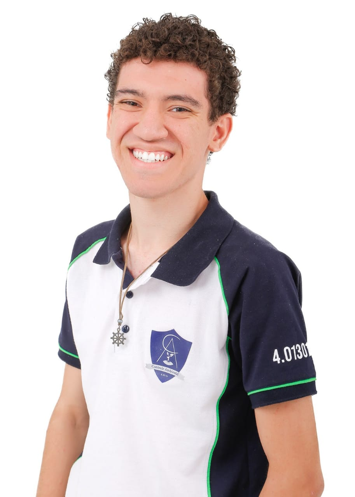

Estudante de Ciência e tecnologia na UFRN, atualmente no 9° período.
Idade: 22 anos. Cidade: Natal- RN.

Bruno Cesar Ribeiro da Silva
Atualmente estou me dedicando unicamente aos estudos. Já trabalhei na área de T.I. mas era suporte, não
mexia com programação, que era meu objetivo. Eu gosto de front-end porque amo projetar a parte visual e
ver tudo funcionando no final. Já fiz projetos pessoais e estou trabalhando em alguns atualmente também.
Como minhas aulas de programação foram apenas em faculdade, e nesse período eu ainda não tinha descoberto minha
paixão pelo front-end, minha expectativa sobre o Santander Coders é que eu aprenda muito, consiga ter muita
experiência e quem sabe conseguir meu emprego na área.
Informações pessoais:
Toco violino desde meus 12 anos.
Gosto de ler.
Gosto de Gatos (tenho 3) e de cachorro (tenho 1).
Antes de pensar em programação, estava entrando na área ambiental.